仙台城跡から広がる、文化探訪の旅
日本三景・松島から鳴子峡まで、絶景が満載
牛タン、ずんだなどの名物グルメ
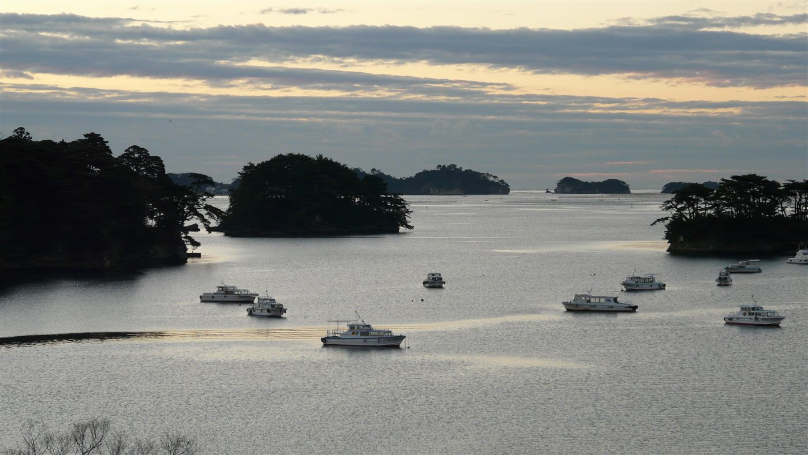
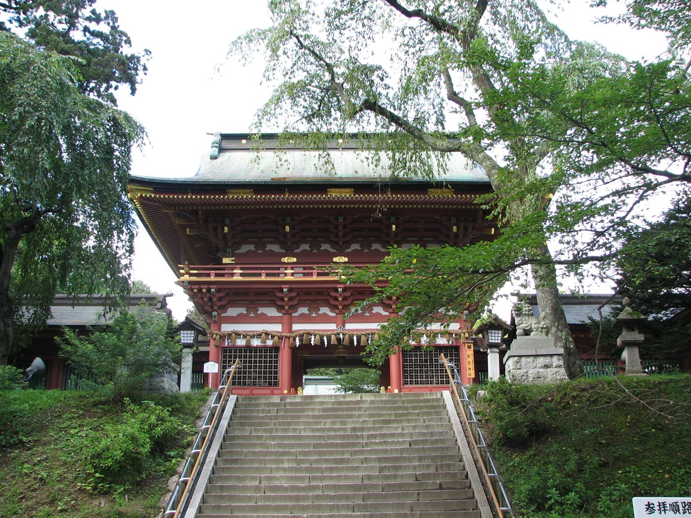
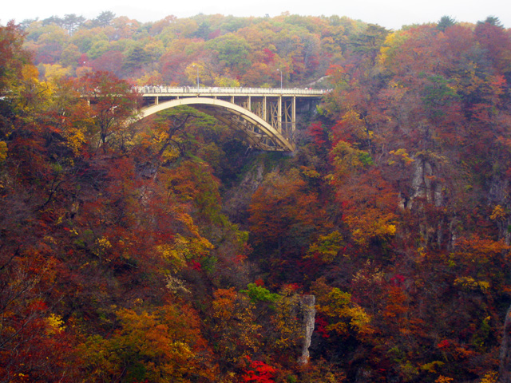
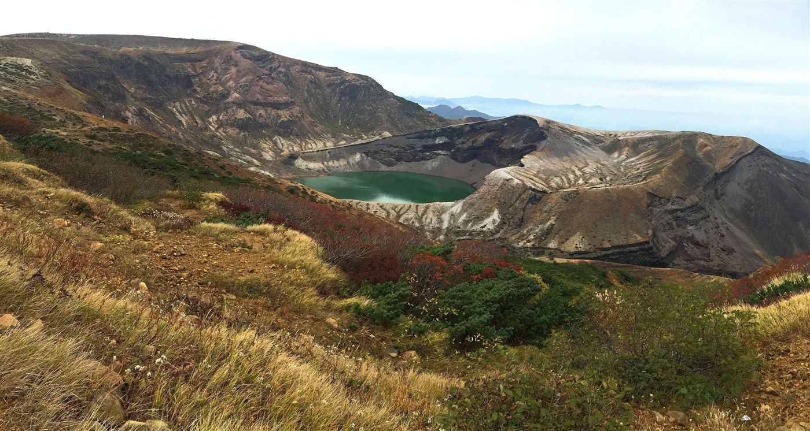
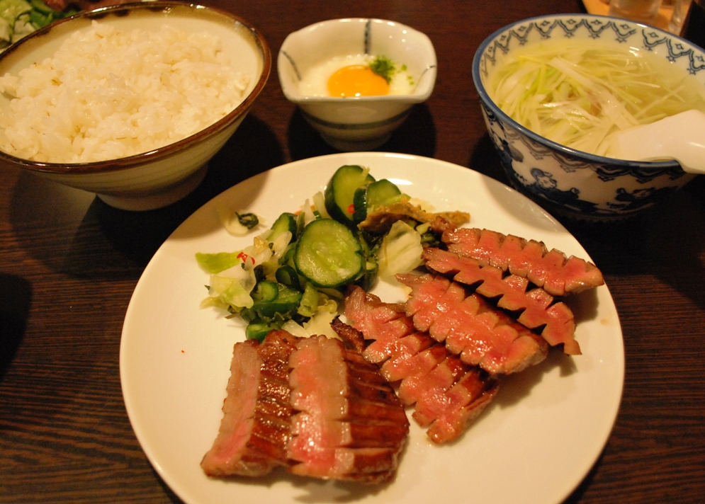
塩辛く焼いた牛タンは仙台の代表グルメ。厚切りの食感がたまりません。
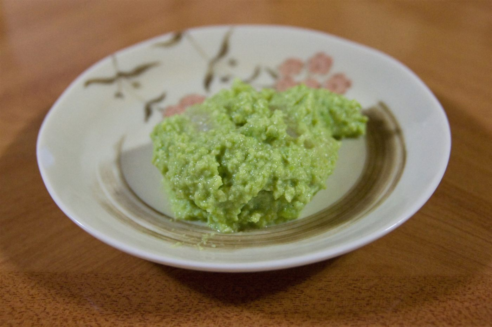
枝豆をすりつぶして作る緑色のあんこ。甘さ控えめで、つい食べてしまいます。
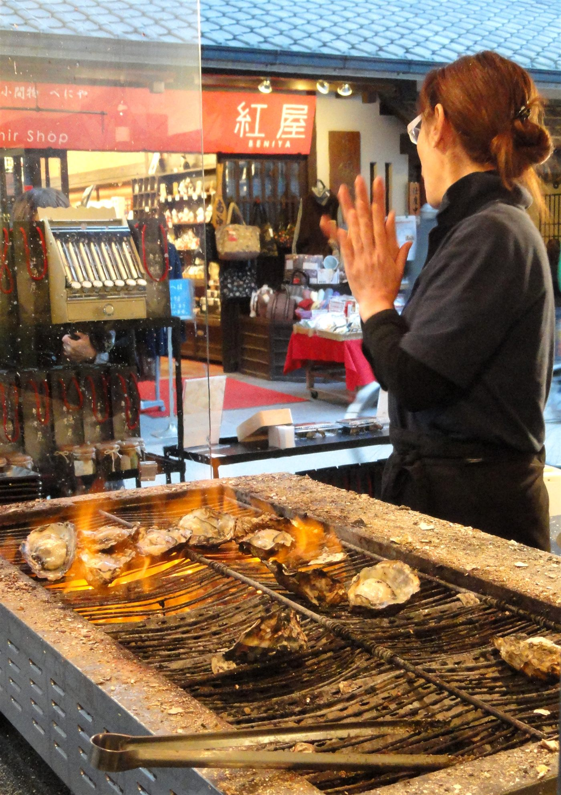
松島湾・三陸の海で育つ濃厚な牡蠣。焼き牡蠣や蒸し牡蠣で旬の味を堪能できます。
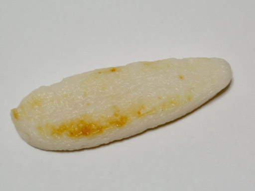
仙台の郷土の味。竹の皮に包まれた笹かま。そのままでも、焼いても美味しい。
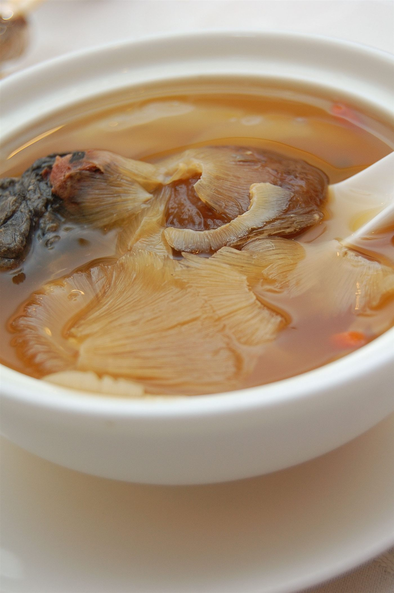
気仙沼は国内有数のフカヒレの産地。とろけるような食感のスープは絶品です。
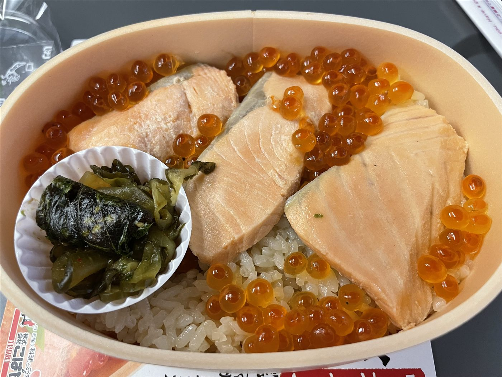
亘理発祥の郷土料理。鮭の煮汁で炊いたご飯に、ほぐし身といくらをたっぷりと。
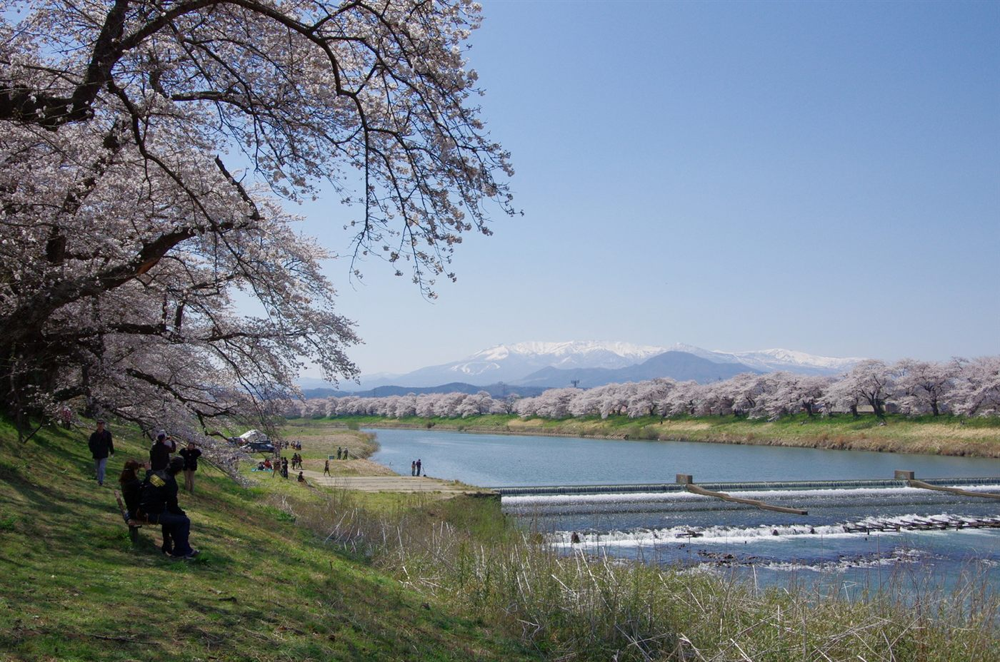
3月～5月
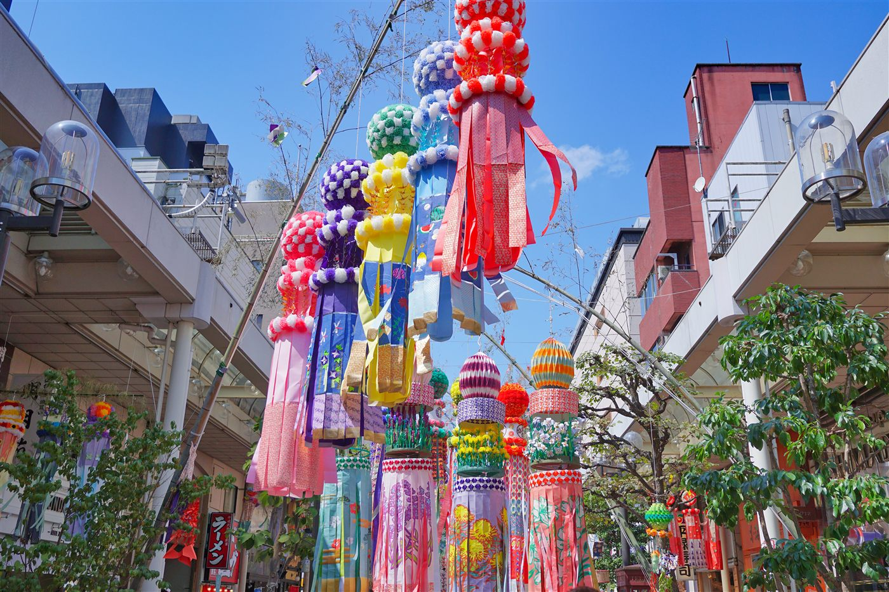
6月～8月
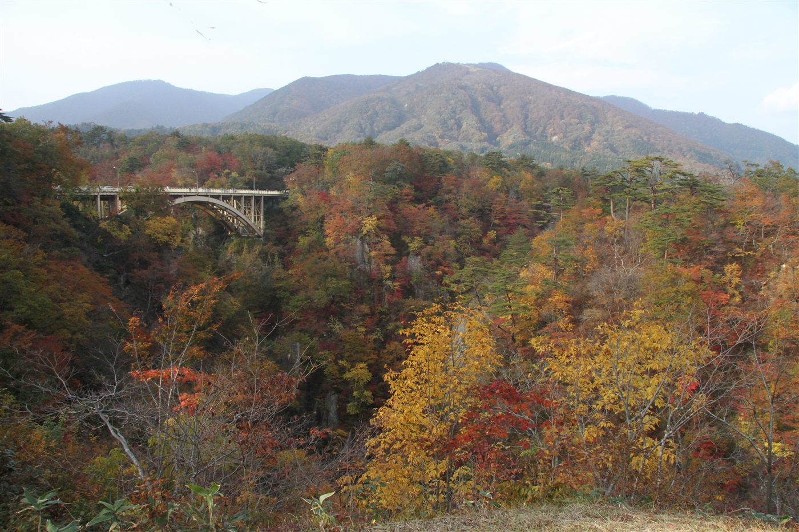
9月～11月
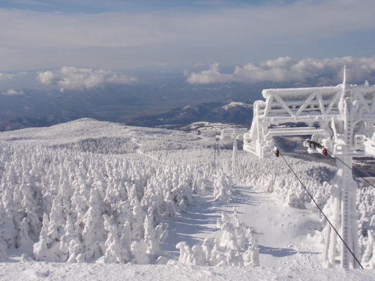
12月～2月
仙台を中心に、東北各地へ繋がる旅の入口
仙台国際空港へ
仙台駅へ
高速道路利用